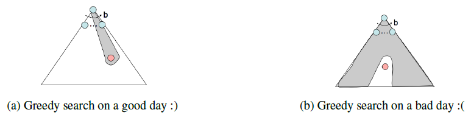
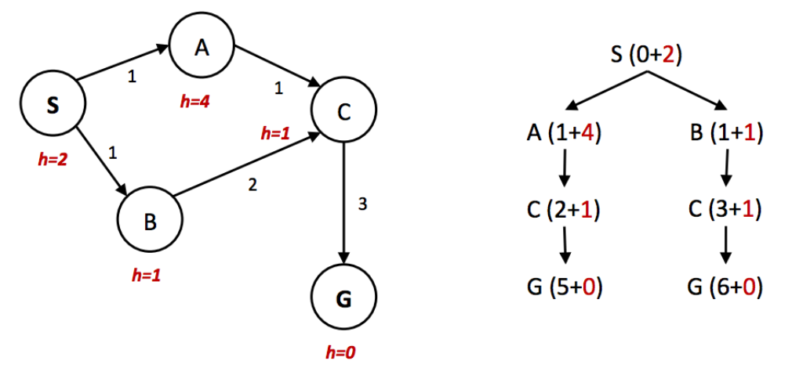
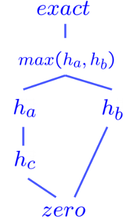

Informed Search
Tip
If we have some notion of the direction in which we should focus our search, we can significantly improve performance and "hone in" on a goal much more quickly. This is the exactly the focus of informed search.
Heuristics
Heuristics are the driving force that allow estimation of distance to goal states - they're functions that take in a state as input and output a corresponding estimate.
Greedy Search
- Description: Always selects the frontier node with the lowest heuristic value for expansion, which corresponds to the state it believes is nearest to the goal.
- Frontier Representation: priority queue
- Completeness and Optimality: Greedy search is neither complete nor optimal.

A* Search
- Description: Always selects the frontier node with the
lowest estimated total cost for expansion
- A* combines the total backward cost (sum of edge weights in the path to the state) used by UCS with the estimated forward cost (heuristic value) used by greedy search by summing them together, effectively yielding an \(estimated \ \ total \ \ cost\) from start to goal.
- Frontier Representation: priority queue
- Completeness and Optimality: A* is both complete and optimal given an appropriate heuristic.
Admissibility and Consistency
What makes a heuristic good?
- \(g(n)\) - The function representing total backwards cost computed by UCS.
- \(h(n)\) - The heuristic value function, or estimated forward cost, used by greedy search.
- \(f(n) = g(n) + h(n)\) - The function representing the estimated total cost used by A*.
The condition required for optimality when using A* tree search is known as admissibility. Defining \(h^*(n)\) as the true optimal forward cost to reach a goal state a given node \(n\), we can formulate the adimissibility constraint as:
Theorem
For a given search problem, if the admissibility constraint is satisfied by a heuristic function \(h\), using A* tree search with \(h\) on that search problem will yield an optimal solution.
An additional caveat of graph search is that it tends to ruin the optimality of A*, even under admissible heuristics. 请看下面的例子：

可以看到，左边的图片的\(h(n)\)是admissible的，但是右图说明，在graph search中使用这个heuristic会导致A*没有找到最优解。
明显的问题是，我们的heuristic并没有对edge的cost作出合理的估计(在左图中，\(h(A) - h(S) = 2 \gt cost(S, A) = 1\))
So here comes the concept of consistency. Consistency is a stronger condition that encompasses admissibility and adds additional requirements.
Consistency: We enforce not only that a heuristic underestimates the total distance to a goal from any given state, but also the cost/weight of each edge in the graph. The consistency constraint is formulated as:
Theorem
For a given search problem, if the consistency constraint is satisfied by a heuristic function \(h\), using A* graph search with \(h\) on that search problem will yield an optimal solution.
Important Note:
- For heuristic that are either admissible or consistent to be valid, it must by definition be the case that \(\forall goal, \ \ h(goal) = 0\).
- Consistency implies admissibility: if no edge costs are overestimated (as guaranteed by consistency), the total estimated cost from any node to the goal will also be underestimated.
Dominance
The standard metric for comparing heuristics is the concept of dominance.
If heuristic a is dominant over heuristic b, then the estimated goal distance for a is greater than the estimated goal distance for b for every node in the state space graph.
The trivial heuristic is defined as \(h(n) = 0\) for all \(n\), reducing A* to UCS.

Common Practice
Generate multiple admisible/consistent heuristics for any given search problem and compute the max over the values output by them to generate a heuristic that dominates (and hence is better than) all of them.
Search: Summary
- Search problem. Their components: state space, actions, transition function, action cost, start state, goal state.
- Rationality: The agent seeks to maximize their expected utility.
- Use PEAS to define the task environment.
- Uninformed search: BFS, DFS, UCS.
- Informed search: Greedy search, A* search.